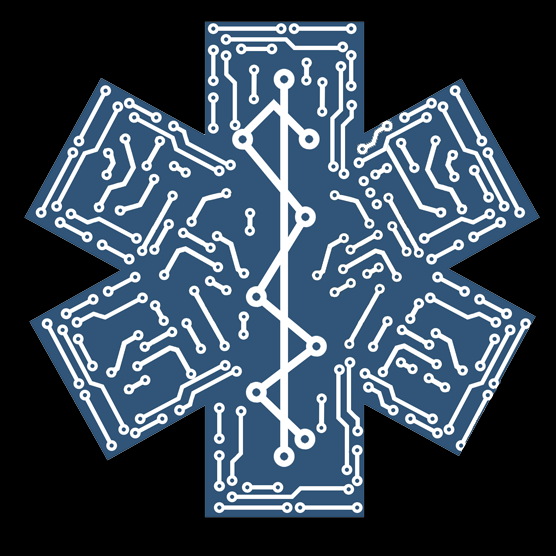
Self-hostable desk workflow for layered STL kits — sync repos, compose a plan, pack plates, export, and check off prints. Attach Cursor / Grok / Claude over HTTP MCP (no in-app Kit Advisor).
Build management — header New Build or sidebar Builds. Utility nav: Builds · Production · Printers · Settings.
One Docker container serves the API and UI on port 8080. Your data stays in a local volume.
git clone https://github.com/poitee/PrintPartnerPartner.git
cd PrintPartnerPartner
docker compose pull && docker compose up -dOpen localhost:8080 on the host, or http://<lan-ip>:8080 from another machine on your network. Add a source on Library, then create a Build with New Build or Builds.
Optional: Spoolman, Moonraker/PrusaLink/Bambu status, Discord digest, Home Assistant, slicer sidecar — see the README.
There is no in-app Kit Advisor and no Settings → AI. Connect Cursor, Grok, or Claude to streamable HTTP MCP at /api/v1/mcp with PRINT_PARTNER_API_KEY. Mutations stay confirm-to-apply.
Light and dark themes from the current UI. The app also supports system theme and a collapsible spine.
Library
Source library with categories, sync status, update badges, and global STL search.
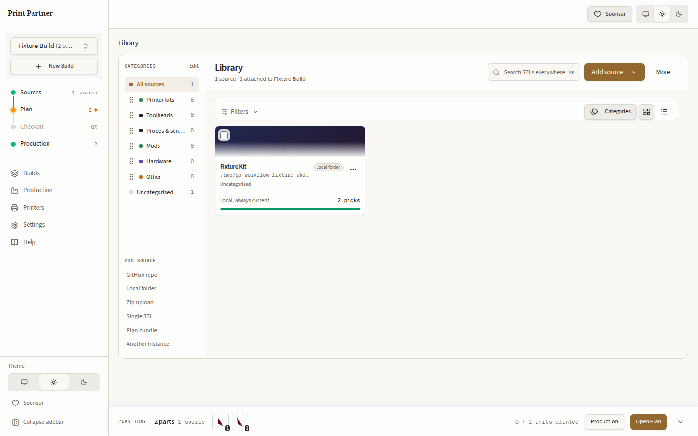
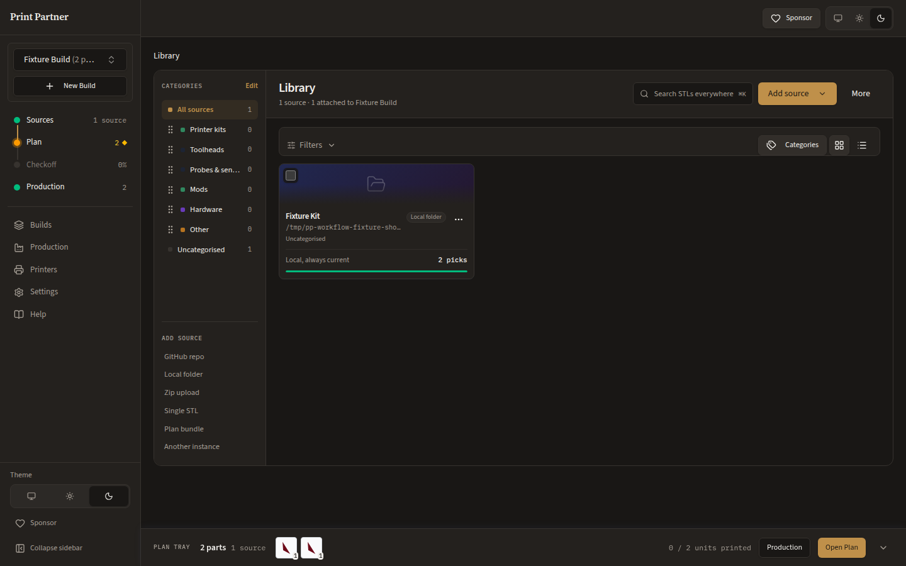
Builds
List-first home — New Build, open into Plan, archive, and restore.
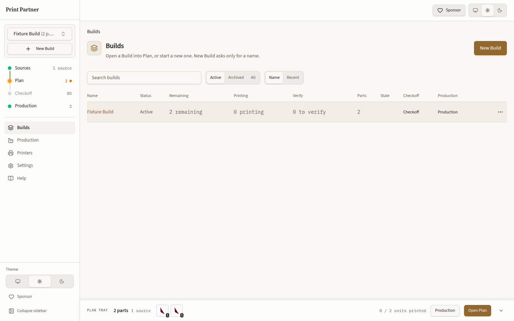
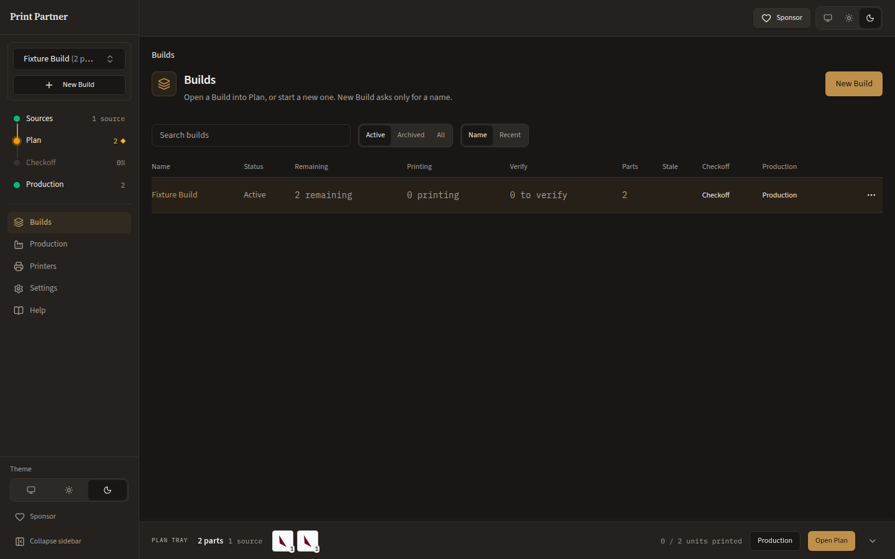
Sources
Attach sources, pick STLs, and set role colors for a Build.
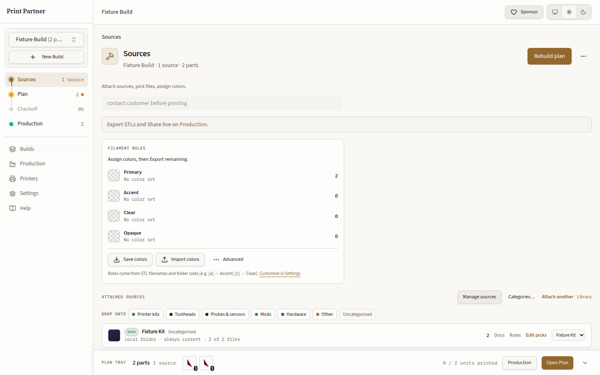
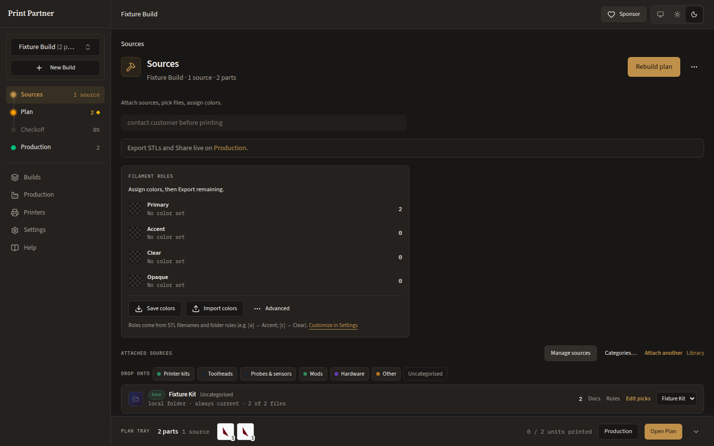
Plan
Quantities, warnings, saved draft, then Apply.
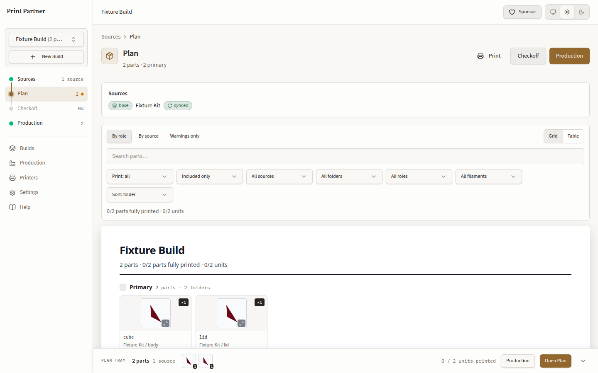
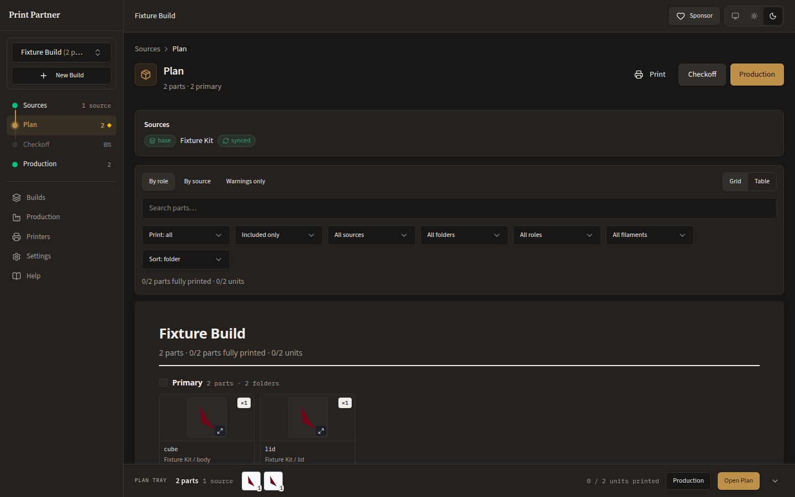
Checkoff
Per-unit print verification. Remaining parts stay on the sheet until marked done.
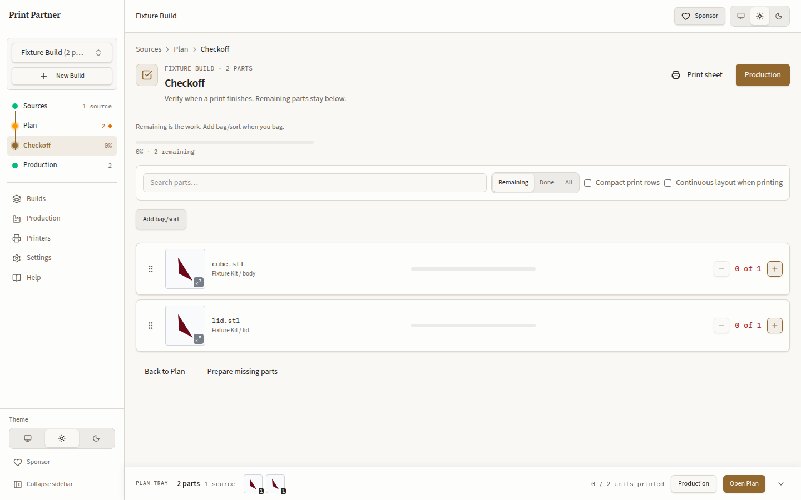
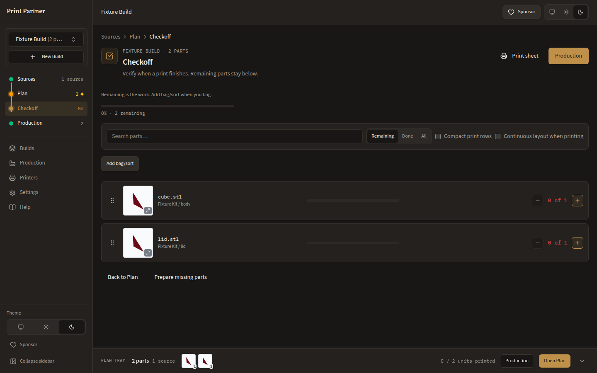
Production
Prepare Plates, named-object 3MF, slicer handoff, and send.
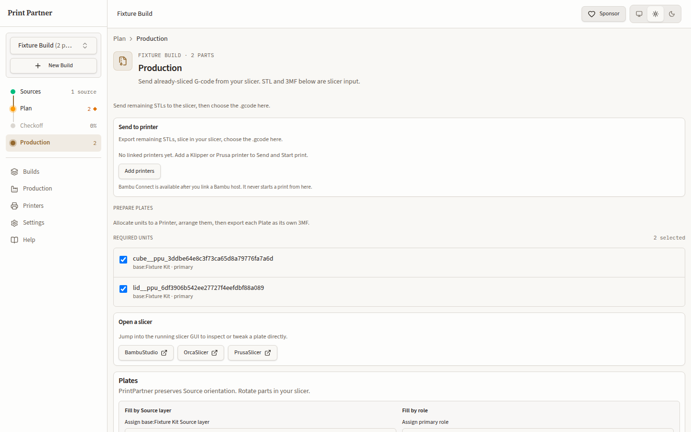
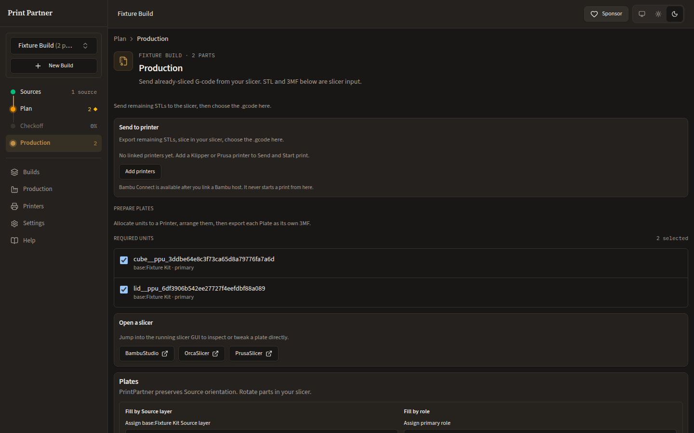
CC BY-NC 4.0 · Summary · Attribution
Credits: Chad Lynch (@poitee), ThunderKeys (@thunderkeys).